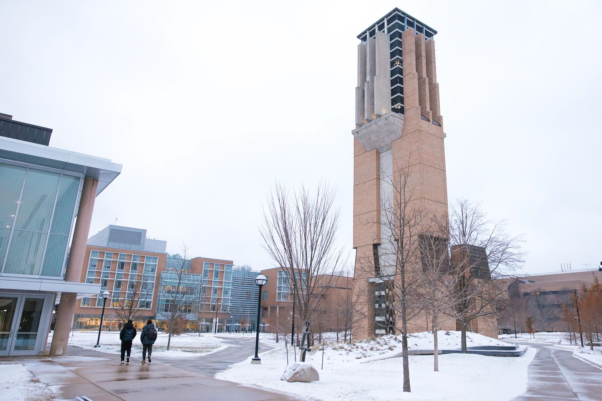

University Health Service (UHS)
University Health Service (UHS): Access comprehensive medical care, including routine check-ups, vaccinations, and specialist referrals.

Your Comprehensive Guide to Resources for Undergraduate School Success
This guide is set up to help you be successful inside and outside of the classroom and we have included the following resources throughout our site:

Keeping your body healthy is essential for success. The University of Michigan offers numerous resources to help you stay in top physical condition:
University Health Service (UHS): Access comprehensive medical care, including routine check-ups, vaccinations, and specialist referrals.
Participate in various fitness programs, sports clubs, and use of gym facilities to stay active and healthy. See UM Recreational Sports for more information on the school's recreational sport opportunities.

The mental wellbeing of our students is very important to us as a university; we have plenty of mental health resources that students can refer to:
Work with a wellness coach to develop strategies for managing stress, time, and overall well-being.
Participate in mindfulness and meditation sessions to cultivate a calm and focused mind.
Join peer support groups for shared experiences and collective coping strategies.
Access individual counseling, group therapy, workshops, and crisis intervention services. See our CAPS page for more information.
Graduate school is more than just academics. It's important to cultivate a balanced life. Here are some resources to help you enjoy life outside the classroom:
Join one of the many student organizations to connect with peers who share your interests and passions.
Explore UM's vibrant arts scene with events, exhibitions, and performances happening year-round.
Utilize career counseling, job search resources, and networking opportunities to prepare for your professional future.
Get involved with local volunteering opportunities and community service projects to make a positive impact.
Find information on on-campus housing options and dining services to ensure a comfortable living experience.